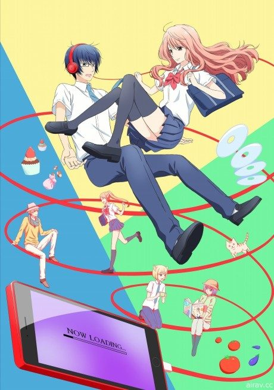
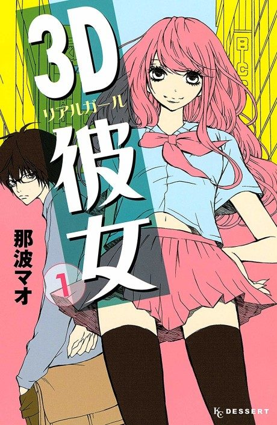

Anime
Manga2018 · Comedy, Drama, Romance
Real Girl
3D彼女 リアルガール
AniList6.6
Animeter—
2 seasons24 ep
MangaUnclear
Anime finished. Where does the manga pick up?
StatusNo source yet
We looked for where the anime ends in the manga but found no source we trust yet. The manga is 51 chapters, finished.